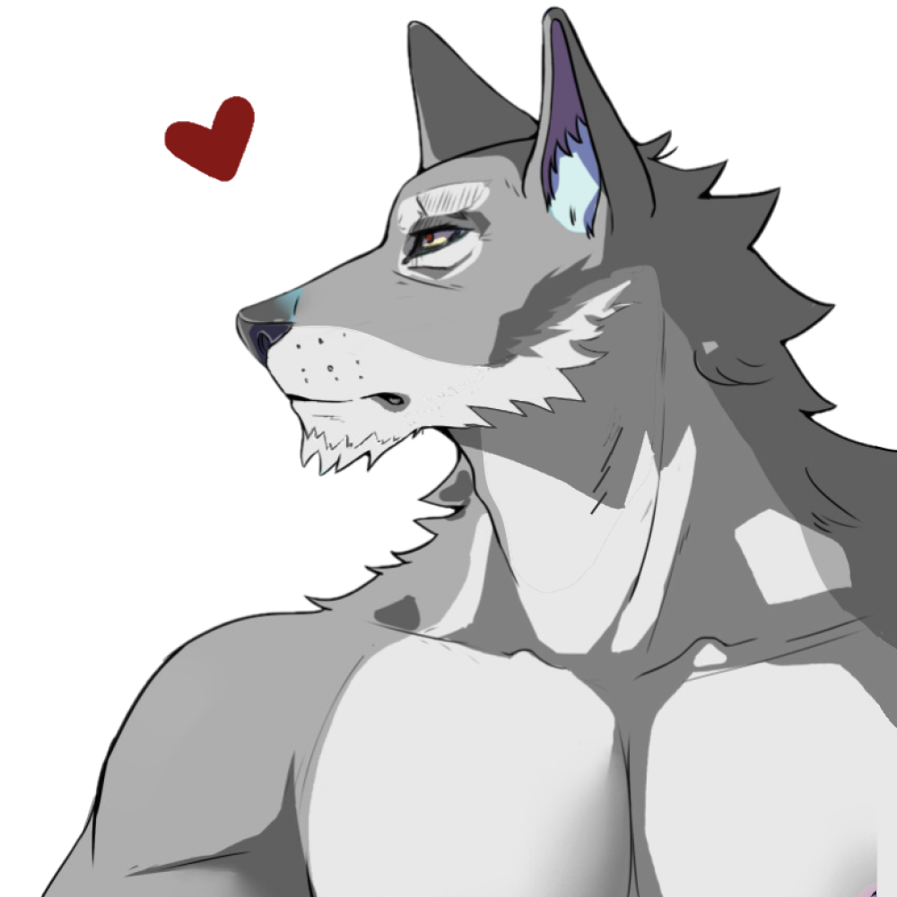

"Quote"
Title: The Doe
Full Name: Clara Kei
Nicknames: My Love (Luke)
Birthday:
Age: 20
Race: Full Mystic Doe
Height: 5'5
Status: Alive
Job: Unemployed
Affiliations: Luke and the Asylum
Early Life
Plot Life
Current Life
Personality
Skills
Strengths
Weaknesses
Hobbies
Loves
Likes
Dislikes
Therapy, The Asylum and Lettuce.
Hates
Being taken advantage of, being ignored and anyone hurting her friends. Also, meat in her food.
Physical Looks
Clothes

"Quote"
Status:
How they met: When there was a food fight and Clara pulled Eren under the table in the Asylum.
Personal Sentiments: She's thankful for everything Eren has done for her, and she appreciates him as a friend. She owes him her life and she hopes to be able to repay him some day.
Extras: Don't tell Eren, but she stole one of his jumpers from his room when everyone else was gone. Shh, she'll take it to the grave.

Status: Best Friends
How they met: In the Asylum
Personal Sentiments: She's happy to have Bobby as a friend. Their relationship has been very rocky but she's proud of him and is glad he enjoys spending time with her.
Extras: She wishes he could learn to be a little quieter when she's trying to sleep, but she can't stay mad at him for long.
"Quote"
Status:
How they met:
Personal Sentiments:
Extras:
Status: Friends
How they met:
Personal Sentiments:
Extras:
Status: Ties Cut
Personal Sentiments: Still coming to terms about how they treated her, she hates them.
Extras: She wishes she still was innocent to their actions, wished she still thought it was normal. It was easier for her then.